Encounter start
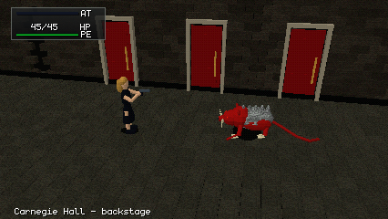
REALTIME_BATTLE_START spawns the basement_rat troop through the production battle_start phase.
tick: 0 / hp: 45 / pe: 100 / ehp: 20 / at: 0 / ammo: 11 / medicine: 1 / outcome: / ui: 0 · Resolved stateFree movement
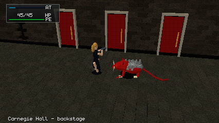
Held input is a direction; the scheduler applies moveSpeed, so diagonals are not faster.
tick: 37 / hp: 45 / pe: 100 / ehp: 20 / at: 18 / ammo: 11 / medicine: 1 / outcome: / ui: 0 · Resolved stateRat wind-up
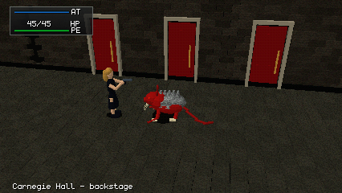
The rat AI choice comes from production getAIAction; the skill delivery telegraphs before it lands.
tick: 200 / hp: 45 / pe: 100 / ehp: 20 / at: 100 / ammo: 11 / medicine: 1 / outcome: / ui: 0 · Resolved stateBite lands
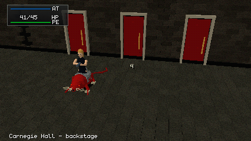
The bite strikes the locked position and lands for 4 because Aya stood still.
Capture forced the rat to choose Bite.
tick: 229 / hp: 41 / pe: 100 / ehp: 20 / at: 100 / ammo: 11 / medicine: 1 / outcome: / ui: 0 · Resolved stateFire tail
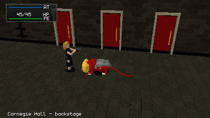
Three projectiles; each may hit at most once.
Capture forced the rat to choose Fire Tail.
tick: 231 / hp: 45 / pe: 100 / ehp: 20 / at: 100 / ammo: 11 / medicine: 1 / outcome: / ui: 0 · Resolved stateCommand menu
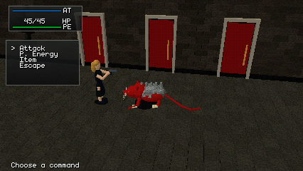
X at full AT opens the menu; the battle clock is paused while it is open.
The rat was held idle for this frame.
tick: 200 / hp: 45 / pe: 100 / ehp: 20 / at: 100 / ammo: 11 / medicine: 1 / outcome: / ui: 1 · Resolved stateAiming
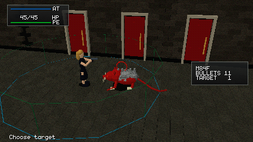
Enter at full AT aims; range lines and cursor are presentation only.
The rat was held idle for this frame.
tick: 200 / hp: 45 / pe: 100 / ehp: 20 / at: 100 / ammo: 11 / medicine: 1 / outcome: / ui: 2 · Resolved stateShot resolved
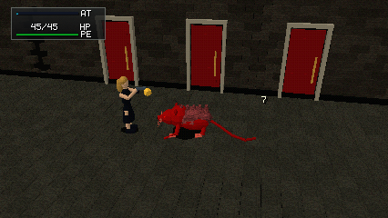
Production Battle resolves the shot: one round spent from inventory, distance-scaled damage.
The rat was held idle for this frame.
tick: 206 / hp: 45 / pe: 100 / ehp: 13 / at: 3 / ammo: 10 / medicine: 1 / outcome: / ui: 0 · Resolved stateParasite Energy menu
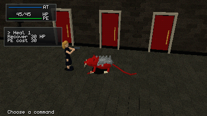
Heal 1 costs 30 of Aya's own PE (a declared battler resource).
The rat was held idle for this frame.
tick: 200 / hp: 45 / pe: 100 / ehp: 20 / at: 100 / ammo: 11 / medicine: 1 / outcome: / ui: 3 · Resolved stateHeal resolved
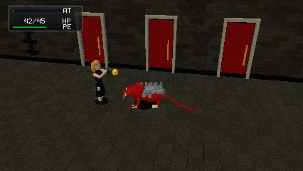
HP 12 to 42 and PE 100 to 70, both resolved by production Battle.
Aya's HP was set to 12 before the action.
tick: 206 / hp: 42 / pe: 70 / ehp: 20 / at: 3 / ammo: 11 / medicine: 1 / outcome: / ui: 0 · Resolved stateItem menu
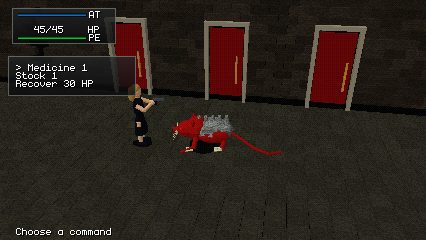
Medicine goes through Battle:applyItem and is consumed.
The rat was held idle for this frame.
tick: 200 / hp: 45 / pe: 100 / ehp: 20 / at: 100 / ammo: 11 / medicine: 1 / outcome: / ui: 4 · Resolved stateVictory
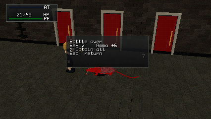
Reached by the scene's own golden input script; the victory phase granted EXP 2 and Ammo +6 once.
tick: 606 / hp: 21 / pe: 100 / ehp: 0 / at: 0 / ammo: 14 / medicine: 1 / outcome: victory / ui: 0 · Resolved stateRewards acknowledged
Enter acknowledges the rewards the victory phase already granted; Enter again replays.
tick: 606 / hp: 21 / pe: 100 / ehp: 0 / at: 0 / ammo: 14 / medicine: 1 / outcome: victory / ui: 0 · Resolved stateDefeat
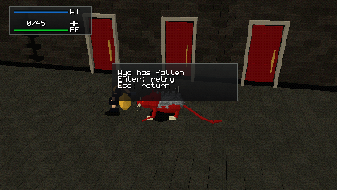
A lethal hit ends the battle as defeat; Aya shows the fallen pose.
Aya's HP was set to 1 to reach defeat quickly.
tick: 239 / hp: 0 / pe: 100 / ehp: 20 / at: 100 / ammo: 11 / medicine: 1 / outcome: defeat / ui: 0 · Resolved stateEscape
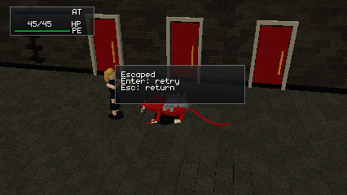
Escape is production's escape effect plus the Project's flee phase.
The rat was held idle for this frame.
tick: 200 / hp: 45 / pe: 100 / ehp: 20 / at: 0 / ammo: 11 / medicine: 1 / outcome: escaped / ui: 0 · Resolved stateAya inspection camera

Isolated asset inspection, not gameplay.
Inspection camera.
tick: 0 / hp: 45 / pe: 100 / ehp: 20 / at: 0 / ammo: 11 / medicine: 1 / outcome: / ui: 0 · Resolved stateRat inspection camera
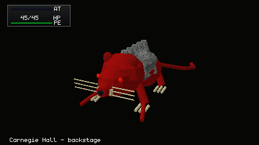
Isolated asset inspection, not gameplay.
Inspection camera.
tick: 0 / hp: 45 / pe: 100 / ehp: 20 / at: 0 / ammo: 11 / medicine: 1 / outcome: / ui: 0 · Resolved state